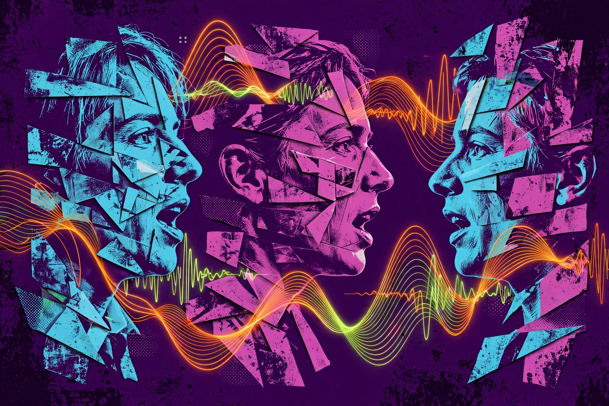
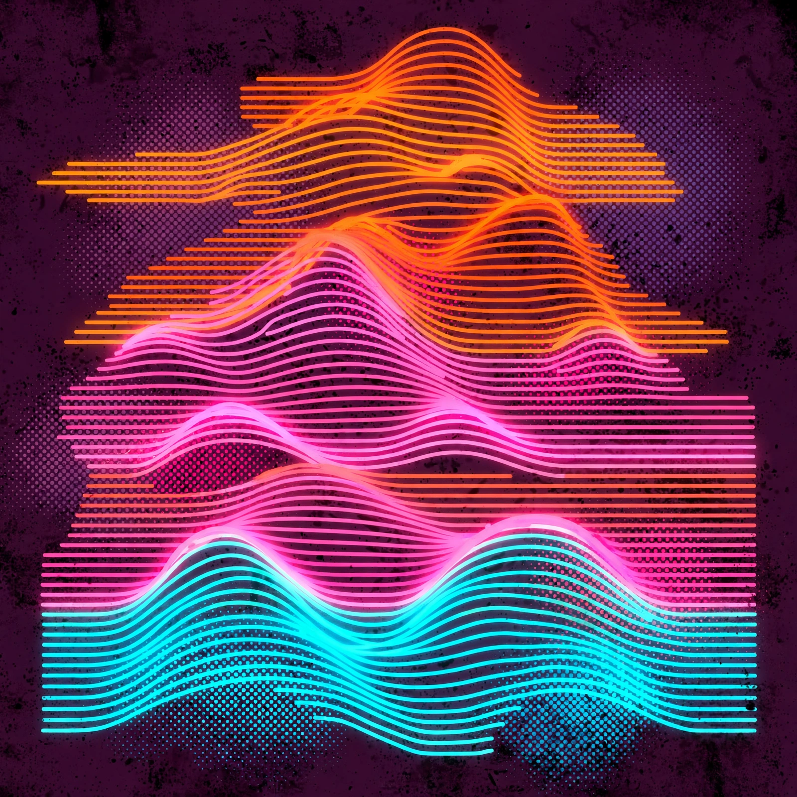

Notes break your presence in the conversation
[CRITERION FOR ENTRY: OWN A PAIR OF GLASSES]
Remember who said what, without taking notes.
Someone agrees to send notes, a deadline moves, a name comes up, and by the next day it is buried under chat threads or gone entirely. Texts, emails and docs all have a search box. What someone said to your face just evaporates.
Notes break your presence in the conversation
Phone recorders capture audio nobody ever replays, with no idea who said what
Meeting tools only work on scheduled calls, not real life
Twenty seconds. Look at the glasses, say your name and one sentence. The system saves a face print and a voice print. Nothing to wear, nothing to print.
The glasses stream audio and periodic photos through the iPhone bridge app. Push-to-talk starts and stops a session, so nothing records by accident.
Every photo gets a face match, every chunk of speech a voice match. The two signals have to agree, or the segment is marked Unknown. The system never guesses a name it is not sure about.
Confidence-gated transcripts land in Postgres. Face prints, voice prints and transcript embeddings land in ChromaDB. A memory store you can actually query.
Query in plain language through an MCP server. Semantic search finds the right moments and answers with verbatim quotes and timestamps. A digest posts to Slack after.
Looks at the glasses, says their name and one sentence. Their speaker card appears on the lens.
A made-up budget discussion. Push-to-talk captures it, face plus voice attributes every line.
What did Maya say about the budget? The answer comes back as her exact words, with the timestamp.
The conversation digest lands in Slack. Who was there, what was said, what is still open.
MAYA VERIFIEDThe budget is capped at forty thousand. No exceptions.
[MAYA · VERIFIED VERBATIM · TUE 4:32 PM · KITCHEN]


OnRecord is designed, built and demoed by Nayan Vangala, a 10th grader from Fremont, California. One builder, one pair of borrowed glasses, fourteen hours.